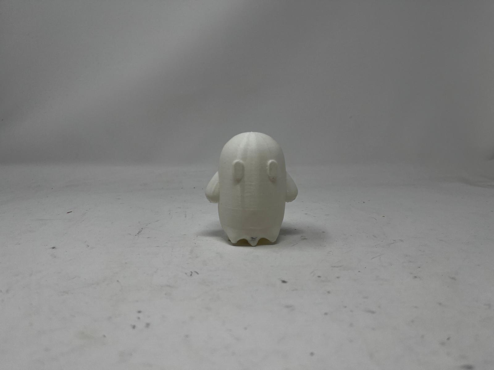
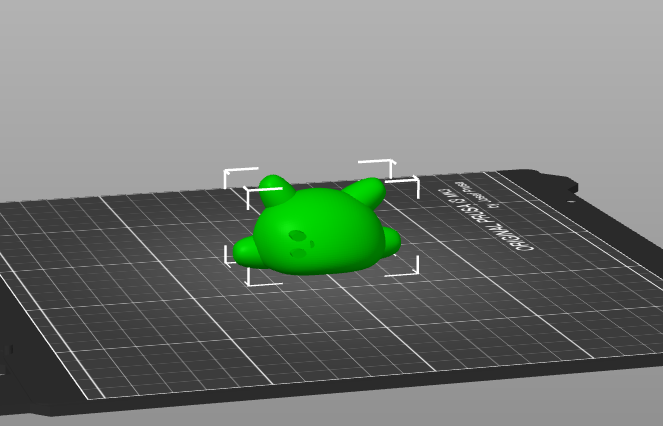
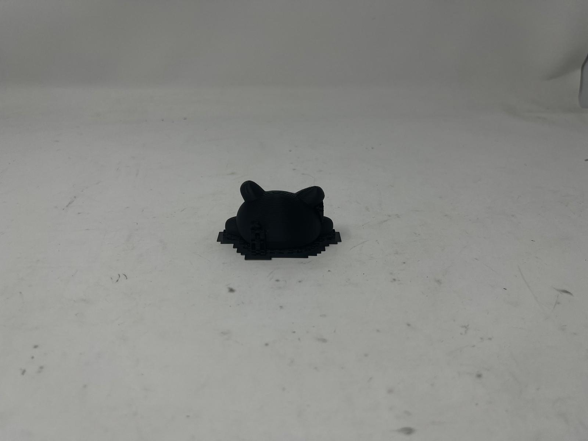
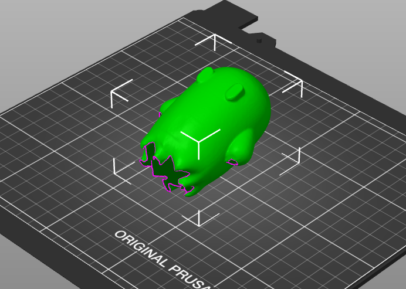

# 3d printing
# ---------------------------------
for my first 3d object, i found a tutorial online , which i followed to create my own little ghost using the "creat form" feature on fusion360. this is what it turned out as:
then, i 3d printed it, and it turned out pretty well!

i then made another 3d figurine, using the same create form feature, and this one also turned out pretty well! you can download the gcode here and the 3mf file here.


# 3d scanning
# ---------------------------------
the 3d scanning was really cool to learn and understand how it works. i decided to scan my ghost figurine since it was pretty smooth and not too shiny, so it would hopefully scan well. below is what i scanned, and it turned out pretty well, especially after using the mesh feature. however, there were some spots that the scan missed, especially on the bottom, which you can see.
